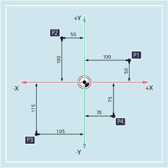
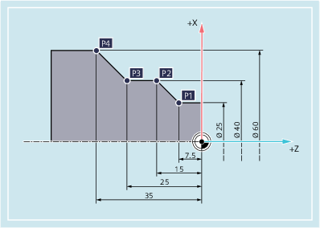
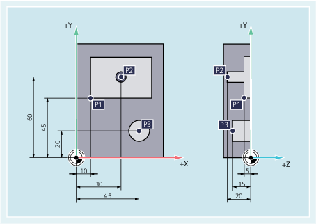

The axes in the coordinate system are assigned dimensions. In this way, it is possible to clearly describe every point in the coordinate system, and therefore every workpiece position based on the direction (X, Y and Z) and three numerical values. The workpiece zero always has the coordinates X0, Y0 and Z0.
To simplify things, we will only consider one plane of the coordinate system in the following example, the X/Y plane:
Points P1 to P4 have the following coordinates:
Position | Coordinates |
|---|---|
P1 | X100 Y50 |
P2 | X-50 Y100 |
P3 | X-105 Y-115 |
P4 | X70 Y-75 |
With lathes, one plane is sufficient to describe the contour:
Points P1 to P4 have the following coordinates:
Position | Coordinates |
|---|---|
P1 | X25 Z-7.5 |
P2 | X40 Z-15 |
P3 | X40 Z-25 |
P4 | X60 Z-35 |
For milling, the feed depth must also be described, i.e. the third coordinate (in this case Z) must also be assigned a numerical value.
Points P1 to P3 have the following coordinates:
Position | Coordinates |
|---|---|
P1 | X10 Y45 Z-5 |
P2 | X30 Y60 Z-20 |
P3 | X45 Y20 Z-15 |
See also:
Travel commands with Cartesian coordinates (G0, G1, G2, G3, X..., Y..., Z...)